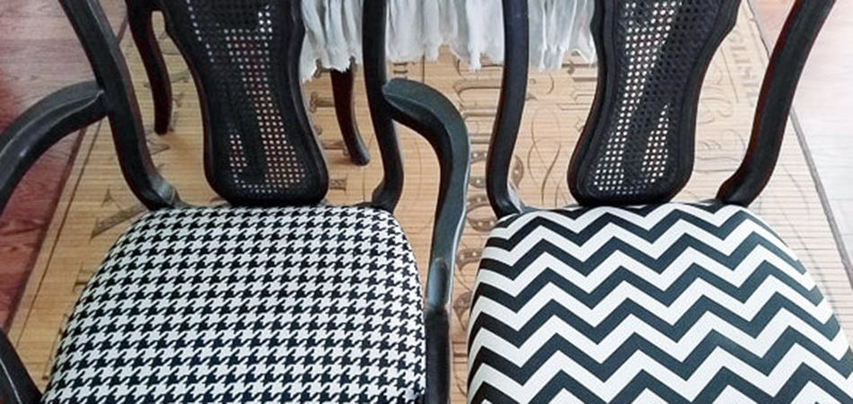

Give your old, worn out chairs new life!
If you're anything like me, you don't enjoy the idea of spending hundreds of dollars on a new set of dining chairs. Purchasing new furniture is a big investment and, when it arrives, your old furniture will be send to the landfill, so I propose that this DIY alternative is the most satisfying solution. ...